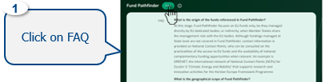
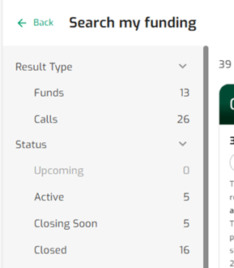
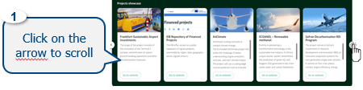
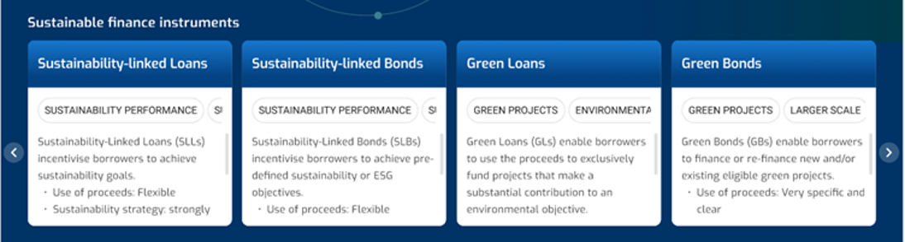
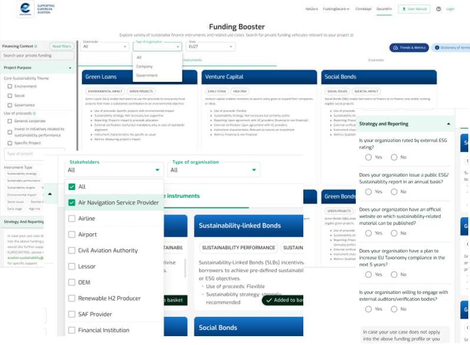
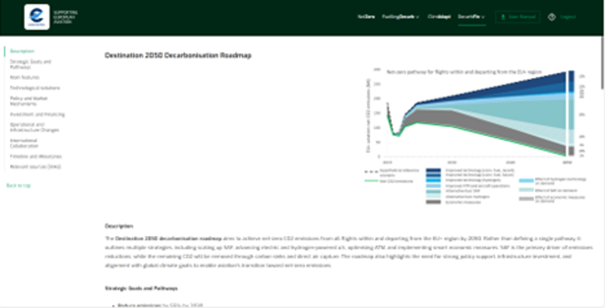
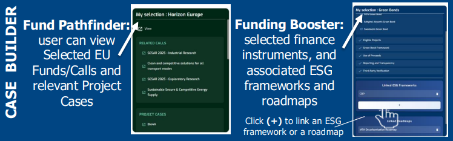
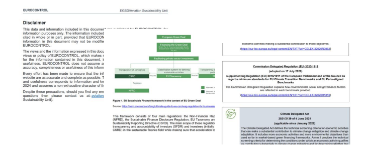

8 DecarbFin
8.1 Fostering aviation success to sustainable finance
As financing aviation decarbonisation proves challenging, due to limited access to sustainable finance and evolving regulatory landscape, DecarbFin provides you with tools and information necessary to facilitate your access to public and private sustainable funding opportunities.
Check out also the Bluebook, a guide for enhanced ESG reporting and compliance with the EU Taxonomy and CSRD to help you navigate this complex regulatory and reporting landscape.
Sections
Fund Pathfinder

8.1 Gateway to Informed Green Energy Choices
As financing aviation decarbonisation proves challenging, dueto limited access to sustainable finance and evolvingregulatory landscape, DecarbFin provides you with tools andinformation necessary to facilitate your access to public andprivate sustainable funding opportunities. Check out also theBluebook, a guide for enhanced ESG reporting andcompliance with the EU Taxonomy and CSRD to help younavigate this complex regulatory and reporting landscape.
>>>>>>> 0c5489e7c3ffb5f1e432003aa1a46c3d0dc9706dFunding Booster

Bluebook

8.2 Functionalities
Functionalities
FAQ
View the DecarbFin FAQ
Fund-Pathfinder
- Funds Overview: View the Funds & Programmes overview
- Search My Funds: Filter My Funds and Calls
- Funds In detail: View the Funds, the Programmes and the Calls’ details
- Project Overview: View the Projects overview
Funding Booster
- Instruments Overview: View the Sustainable Finance instruments - Summary
- Instruments Details: View the Sustainable Finance instruments - Details
- Instruments Summary: View the Use Cases
- Dictionary: View the Dictionary of Terms
- Search Instruments: Search and Filter my “private” Sustainable Finance instruments
- Essential View: View the Essentials (ESG Frameworks, Roadmaps
- Dashboard: View the Sustainable Finance dashboard
- Bluebook: Download the Bluebook
8.3 View the DecarbFin FAQ

Default
FAQ for Fund Pathfinder
Output
The FAQ is presented for the Fund-Pathfinder.

Data
The FAQ summarises the scope of Fund Pathfinder under a list of given Q&A defining:
geographical scope,
programme/fund scope,
stakeholders addressed,
funding options,
project (sub-) types,
project maturity.
Definition
Beneficiaries:: aviation stakeholders benefiting from the EU funding programmes included in Fund Pathfinder;
Result type: search results that correspond to either a Fund, a Call, or both;
Fund: a EU funding programme or financing instrument;
Call: a specific funding opportunity (often a grant) for a given Fund/Programme, with a specific time window when applicants are invited to submit under their Call for Proposal;
Technology Readiness Level (TRL): a method used to assess the maturity of a particular technology;
Project type/sub-type: project categorisation according to eligible stakeholders, purpose of project and maturity level.
8.4 View the Funds & Programmes overview

Default
All Currently available Funds & Programmes
(With one exception: although completed and replaced by Horizon Europe, Horizon 2020 is displayed here as it has funded many aviation related projects of interest)
Output
The Funds & Programmes available are presented on the carrousel.

Data
The source of information for the Funds & Programmes is the official EU (and EU relevant agencies) websites.
Definition
Funds / Programmes: financial resources allocated by the EU to projects & initiatives that support the EU strategic priorities, within its Member States and beyond in some cases. A sub-set of Funds selected for their relevance to aviation sustainability.
State: ECAC Member State in which the aviation beneficiary is located.
Stakeholder: type of company/organisation in the aviation value chain.
8.5 Filter My Funds and Calls

Query
Two methods for searching
- Quick general query: you may use the filters at the top of the page: State, Stakeholder, Keyword: you can select one State, one or multiple Stakeholders and optionally Keyword(s).
Refined query for specific project types: You may use the filters on the left hand-side, where all filtering combinations are possible:
- Result type (Fund/Call),
- Status (Active/Upcoming…),
- Funding Type (Grant, other…),
- Project maturity,
- Project Type (purpose).
The search can combine filters at the top and the left of the page.

Note on Result Type: The query can be made on “Funds” or “Calls”, or both combined. “Calls” are instantiations of “Funds” meaning that they are more focused and may only target a subset of the project types defined in the corresponding “Fund”.
Output

8.6 View the Funds, the Programmes and the Calls details

Default
Sections appearing in a Fund: Description, Funding types, Calls, Other support, Funding principles and rates, Project Maturity, Eligible States, Aviation related cases, References, Contact.
Sections appearing in a Call: Description, Funding types, Call total budget, Funding ratio, Call topics.
Output
The Funds & Programme or Calls details are displayed. The navigation is managed from the navigation index on the left-hand side.

Data
The information is sourced from the official EU websites and/or from the website of the specific programme/fund/call.
Definition
- Funding type(s): type of funding resource (e.g. grant) or financing instrument (e.g. loan, bond, equity…)
- Submission: process of providing all necessary documents before deadline when applying for an EU funding opportunity
8.7 View the Projects overview

Default
Current or past Projects, publicly available, that have benefited from EU Funding and are relevant for aviation decarbonisation.
Output
The Projects are presented on the carrousel.

Data
All projects showcased and their descriptions are sourced from the official sites of the projects or from relevant EU websites.
Definition
Projects showcase: A (non-exhaustive) selection of publicly disclosed projects, that have benefited from EU Funding and are relevant for aviation decarbonisation.
8.8 View the finance instruments - Sustainable Summary
Default
Sustainable finance instruments offered by the financial institutions: sustainability-linked loans, green bonds, sustainability-linked bonds, green loans, social bonds and venture capital.
Output
Carousel of the summary cards of sustainable finance instruments located in the landing page constitute a very structured summary of the full description of sustainable finance instruments.

Data
Public data available in various websites with focus on ICMA resources.
The selection of options is based on historic transactions pertaining to the aviation industry coupled with two extra alternatives for social and early-stage projects.
Definition
Please consult the Dictionary of terms function.
Tip: By clicking on any of the cards in the carousel, a longer description of the sustainable finance instrument appears – please see next page.
8.9 View the Sustainable finance instruments - Details
Default
View the following items:
The Description of the instrument,
The recorded range of aviation-related volumes,
Areas of Eligibility,
Potential Use of Proceeds,
Instrument’s Characteristics,
Procedural Framework,
Sustainability Strategy,
Key Performance Indicators,
Reporting Needs,
External Verification Needs and Completed with the relevant (if any) Use Cases corresponding to that specific instrument.
Output
Sustainable finance instruments are presented in detail. The navigation can also be managed from the navigation menu on the left hand-side.

Data
All information is sourced from publicly accessible sources which are located at the bottom of the page.
Definitions
Please consult the Dictionary of terms function
8.10 View the Use Cases
Default
A selection of diverse sustainable finance transactions or past Use Cases from the global aviation sector. They constitute financial deals between borrower companies active in aviation and financial institutions. These deals are subject to ESG-related financial conditions.
Output
Each Use Case outlines a single transaction with details on:
State,
Type of stakeholder,
Organisation,
Amount asked,
Use of proceeds,
KPIs used,
EU Taxonomy relevance,
Transaction year,
Source.

Data
Public data mainly by press releases from involved parties or articles mainly at bank websites.
Definitions
Please consult the Dictionary of terms function.
8.11 View the Dictionary of terms
Default
List of short explanations and definitions of terms appearing in the Funding Booster functionalities .
Output
Each term is categorised under the Funding Booster’s functionality it belongs due to times of appearance. Each term is shortly explained with examples provided sometimes.
Data
All information is based on internal ASU validated information/knowledge and/or public acknowledged websites.

8.12 Search my “private” funding and Filter my Sustainable Finance instruments
Query
Type of stakeholder: definition of stakeholder type
Project purpose: selection of the purpose of the proceeds (project – based or non-project based)
Strategy and Reporting: profiling of sustainability strategy and reporting capabilities of the company

Output
List of search results pertaining to sustainable finance instruments

8.13 View the Essentials
1. ESG Frameworks
Default
View the following items:
Purpose of the framework
Focus Areas
Key Highlights
Categories of ESG metrics
Target Audience
Relevance with Aviation Sector
Where to Report
Cost of Use
Target Users
Reporting Period
Short Conclusion
Output
Each ESG framework is presented in detail. The navigation can be also managed from the navigation menu on the left side.
Data
All information is sourced from publicly accessible sources which are indicated at the bottom of the page. Some of them correspond to the official site of the ESG framework, where applicable (ie. CDP).

Definitions
Please consult the Dictionary of terms function.
2. Roadmaps
Default
View the following items: - Description of the roadmap
Strategy Goals it entails
Main Features
Technological solutions put forward
Policy and Market Mechanisms
Investment and Financing
Operational and Infrastructure Changes
International Collaboration
Timelines/Milestones under its decarbonisation pathways

Output
Each roadmap is presented in detail. The navigation can be also managed from the navigation menu on the left side.
Data
All information is sourced from publicly accessible sources which are located at the bottom of the page. They correspond to the official site of the roadmap release (ie. ICAO, IATA, SBTi, etc.).
Definitions
Please consult the Dictionary of terms function.
8.14 View the Sustainable Finance dashboard
Default
Volume transactions per State (ECAC & Global)
Sustainable financing volume per instrument
Sustainable financing volume per Key Performance Indicator
Proceeds allocation per instrument and per stakeholder
Key Performance Indicator used per stakeholder type
Output
Key volumes per geography, over time and per instrument, per Environmental, Social or General context, per stakeholder type and use of proceeds and finally, indicators appearing in transactions.
Data
Public data (web).
For a comprehensive list of sources, click here.
Definitions
Please consult the Sustainable Finance dashboard for more information on how to read and interact with the visuals.
8.15 View the funding basket
Funding Basket: a space to temporarily store selected information from Fund Pathfinder and Funding Booster and export to a word format.

Default
The basket view consists of a Fund Pathfinder (EU funding) and Funding Booster (private funding) space: the user can select/add, view, and remove all the funds/calls and financial instruments previously selected. They can also add, view and remove ESG frameworks and Roadmaps.


Output
Fund Pathfinder: Sustainable business case including a selection of Funds and/or Calls including relevant EU funded project cases.
Funding Booster: Sustainable business case defined by a single, selected financial instrument, and may include a linked ESG framework and/or a linked Roadmap.
8.16 Download the Bluebook

Default
Bluebook
Output
The Bluebook is downloadable from the Landing page.

Data
The Bluebook summarises the EU Taxonomy and CSRD regulations using and quoting information provided by official EU regulatory websites, material produced by EFRAG, and other non-EU advisory services.
8.17 DecarbFin journey
DecarbFin step-by-step
Funds Overview: Check the Description of a Fund: Horizon Europe
Projects: Check a funded Project’s website: BioSFera project
Search My Funds: Search for the available Funds with the criteria ‘France’ and ‘ANSP’ – Refine the search with the criteria ‘Active Calls’
Calls Overview: Check all calls attached to a given Fund: Connecting Europe Facility
Search My financing: Search for Sustainable finance instruments: Sustainability-linked Loans
Find a Use Case: Check for past use cases/ transactions: Air France-KLM Sustainability-linked Loan
Dashboard: Become aware on latest sustainable finance trends & metrics
Bluebook: Download the Bluebook
The advantages of your journey
Quickly identify EU funding options that are relevant for your projects, with initial guidance to apply, with Fund Pathfinder.
Check success stories of past and ongoing, aviation sustainability-related, EU funded projects, as a source of inspiration.
With the Bluebook, better understand the EU Taxonomy and CSRD with aviation-specific insights to help you comply with these regulations.
Build a robust sustainability business case with the right EU fund(s), private financing instrument(s), and complement it with essential ESG frameworks and sustainability roadmaps.
8.3 Example: Embedded YouTube Video
Watch directly here:
>>>>>>> 0c5489e7c3ffb5f1e432003aa1a46c3d0dc9706d